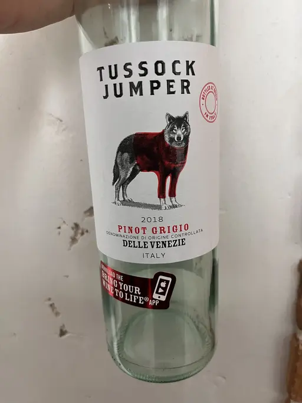

- Type
- White Still, Dry
- Producer
- Tussock Jumper
- Vintage
- 2018
- Location
- Italy, Delle Venezie DOC
- Grapes
- Pinot Gris
- Alcohol
- 12
- Sugar
- NA
- Price
- 305 UAH
- Cellar
- N/A
Producer
Mass market producer focused on straightforward and approachable wines for ‘modern consumers’. They have wineries all over the world. Recognizable labels that can be turned into entertainment when scanned with their application that augments reality.
Ratings
There are no ratings of this wine yet. It’s waiting for the right moment, which could be today, tomorrow or even in a year. Or maybe, I am drinking it at this moment… So stay tuned!